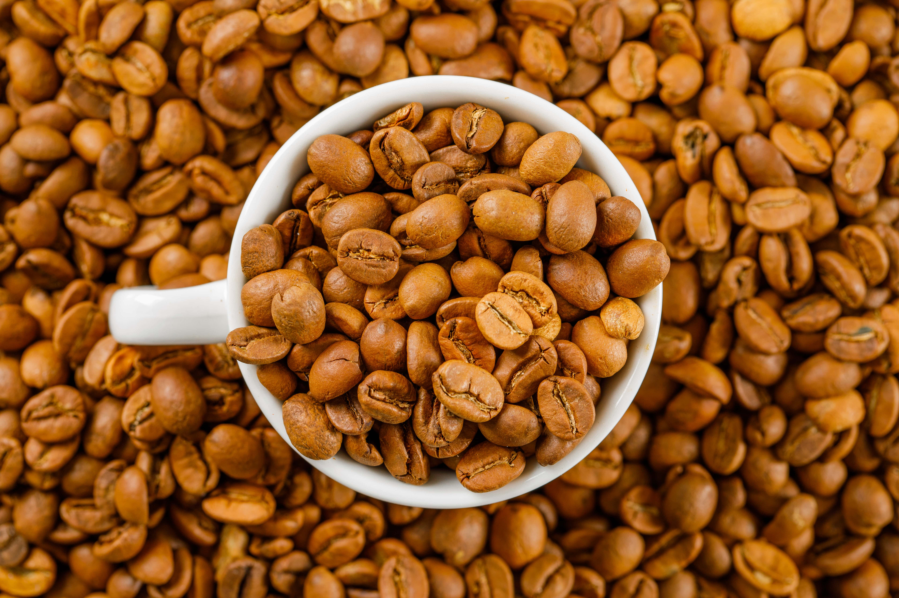
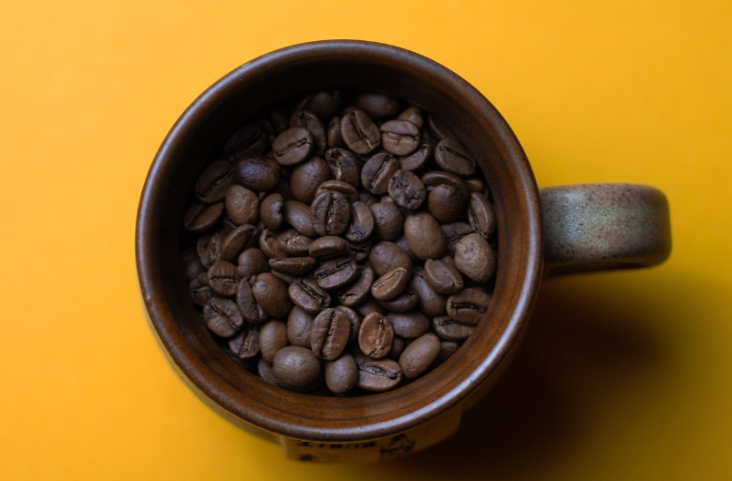
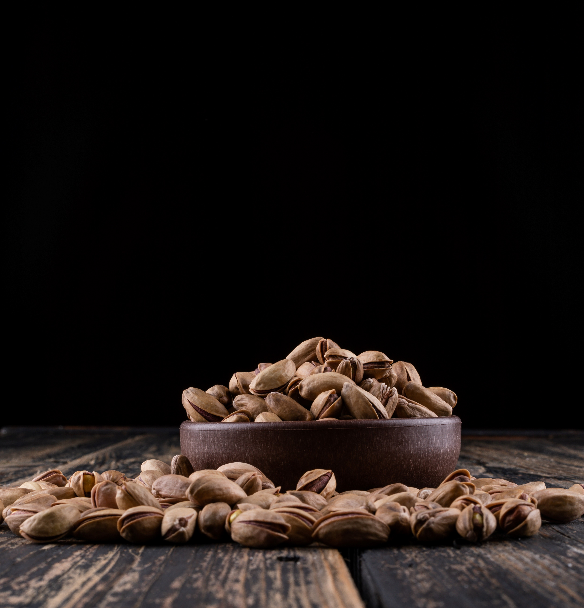
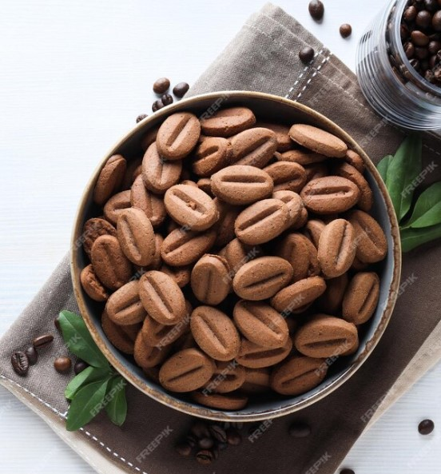

Our Products

Gayo Coffee
Distinctive flavor with a unique aroma from Aceh.
Buy Gayo Coffee from Aceh, known for its unique aroma.

Toraja Coffee
Bold taste with a hint of spices from the Toraja highlands.
Buy Toraja Coffee with spicy notes from the highlands.

Kintamani Coffee
Bali's fresh coffee with a fruity acidic touch.
Buy Kintamani Coffee with a fruity, acidic flavor from Bali.

Flores Coffee
Coffee from Flores with a fruity, acidic touch that reflects the volcanic soil of East Nusa Tenggara.
Buy A distinctively fruity and bright coffee sourced from the rich volcanic highlands of Flores, East Nusa Tenggara.

Mandheling Coffee
A full-bodied, earthy coffee with a smooth finish, sourced from the rich soils of North Sumatra.
Buy Mandailing Coffee, known for its full-bodied richness and earthy tones, grown in the highlands of North Sumatra, Indonesia.